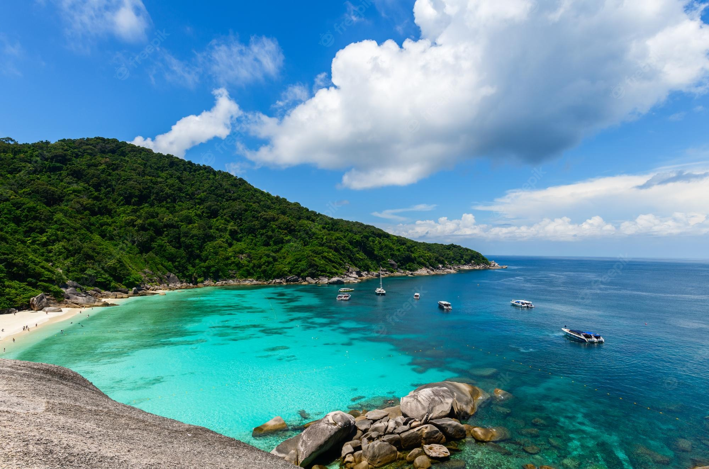

Andaman |
 |
HotelBlue Lagoon Resort is located in Andaman and features a bar. Among the facilities of this property are a restaurant, a 24-hour front desk and room service, along with free WiFi throughout the property.Blue Lagoon Resort, Neil Island is definitely a preferred property for this. Beautiful cottages with spacious accommodations that are equipped with comfortable beds, clean washrooms, and several modern facilities has been positively reviewed by many. It is also surrounded by a variety of attractions and also located close to the airport, Veer Savarkar International Airport. +91 9474238860Google Maps |